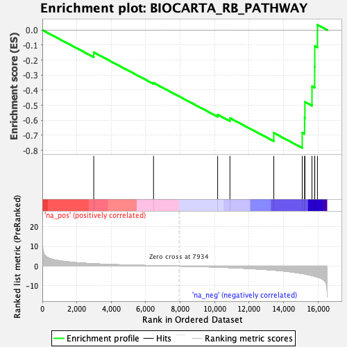

| | | Dataset | DE_genes2 |
| Phenotype | NoPhenotypeAvailable |
| Upregulated in class | na_neg |
| GeneSet | BIOCARTA_RB_PATHWAY |
| Enrichment Score (ES) | -0.7838543 |
| Normalized Enrichment Score (NES) | -1.7355464 |
| Nominal p-value | 0.0 |
| FDR q-value | 0.03892092 |
| FWER p-Value | 0.192 |
Table: GSEA Results Summary

Fig 1: Enrichment plot: BIOCARTA_RB_PATHWAY
Profile of the Running ES Score & Positions of GeneSet Members on the Rank Ordered List
| PROBE | GENE SYMBOL | GENE_TITLE | RANK IN GENE LIST | RANK METRIC SCORE | RUNNING ES | CORE ENRICHMENT | | 1 | YWHAH | | | 2983 | 1.202 | -0.1482 | No |
| 2 | TP53 | | | 6453 | 0.253 | -0.3514 | No |
| 3 | CDK4 | | | 10174 | -0.517 | -0.5626 | No |
| 4 | CDK2 | | | 10886 | -0.760 | -0.5852 | No |
| 5 | WEE1 | | | 13432 | -2.049 | -0.6840 | Yes |
| 6 | CDC25A | | | 15082 | -3.764 | -0.6825 | Yes |
| 7 | ATM | | | 15219 | -3.945 | -0.5844 | Yes |
| 8 | CDC25B | | | 15237 | -3.978 | -0.4783 | Yes |
| 9 | CDC25C | | | 15648 | -4.802 | -0.3738 | Yes |
| 10 | RB1 | | | 15805 | -5.145 | -0.2446 | Yes |
| 11 | CDK1 | | | 15810 | -5.156 | -0.1060 | Yes |
| 12 | CHEK1 | | | 15965 | -5.552 | 0.0343 | Yes |
Table: GSEA details [plain text format]
Fig 2: BIOCARTA_RB_PATHWAY: Random ES distribution
Gene set null distribution of ES for BIOCARTA_RB_PATHWAY